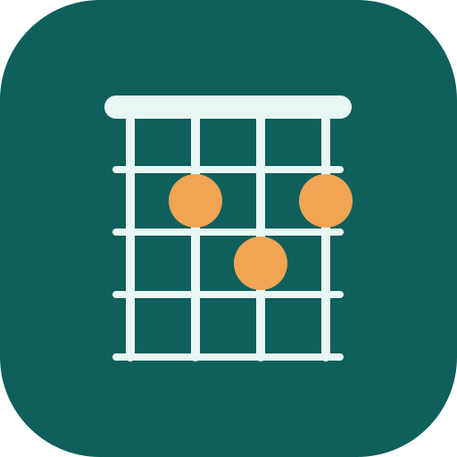

Skip to main content

Fretboard
Progressions
Explore
My Songs
Chords
Practice
Settings
Help
Instrument
Changes chord shapes in Explore and Chords. Each song keeps its own instrument.
Loading Fretboard Progressions…
Fretboard Progressions needs JavaScript enabled.